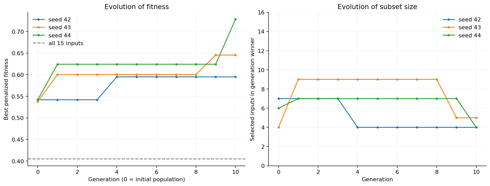
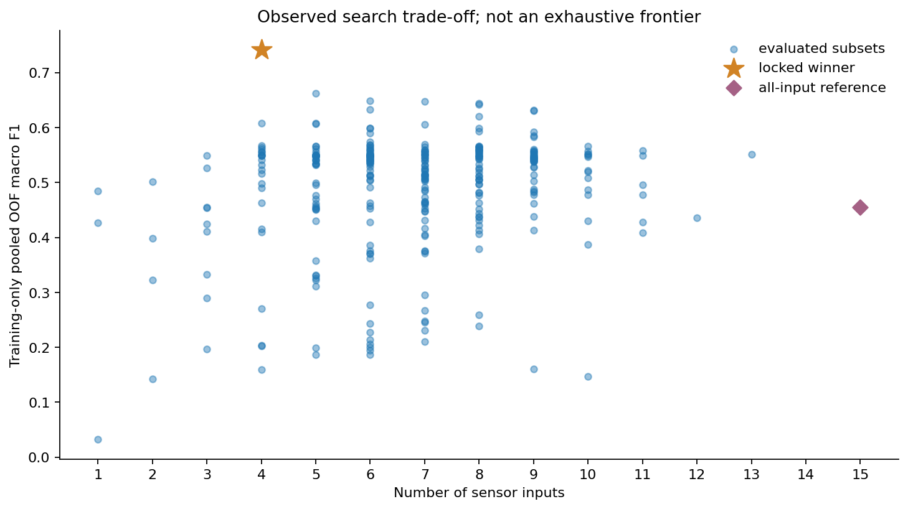
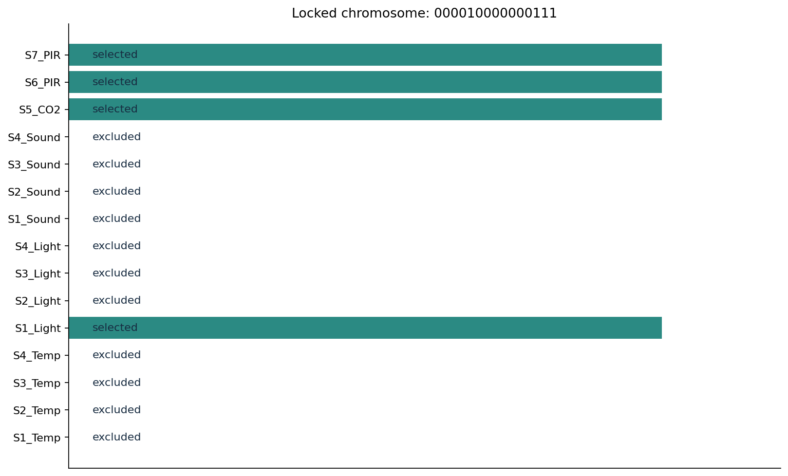
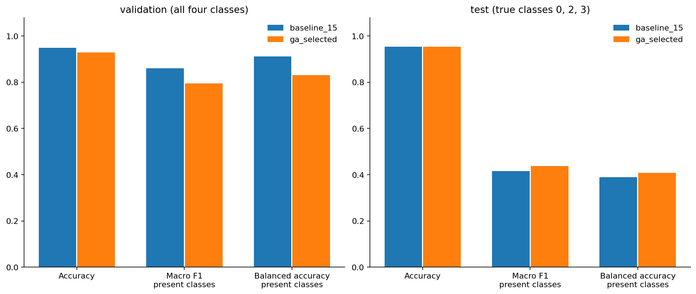
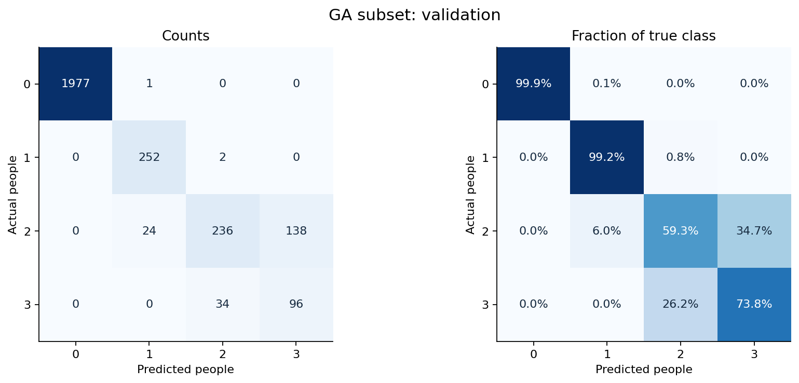
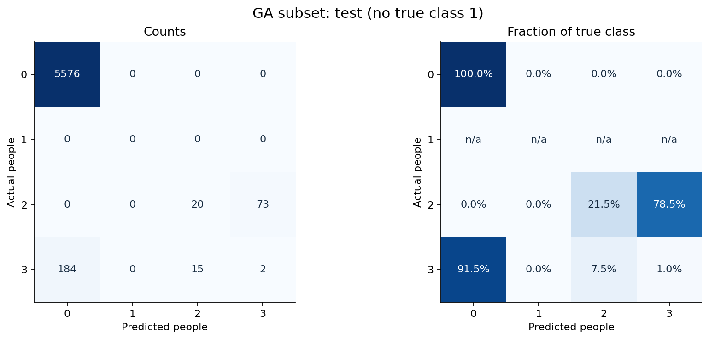

SOFT COMPUTING MINOR PROJECT / PHASE 3
Genetic Algorithm sensor selection
4 of 15 input channels selected
S1_Light, S5_CO2, S6_PIR, S7_PIR
Chromosome: 000010000000111. Three GA runs; 318 distinct subsets evaluated.
Validation macro F1 decreased: 0.8608 → 0.7952. Selected-model accuracy: 92.79%.
Later-test balanced accuracy: 40.83%. No true class 1 occurs in that test. External comparisons reuse data seen in earlier phases; they are not independent confirmation. Fewer inputs do not establish hardware or energy savings.
How selection works
Fitness = training-only pooled OOF macro F1 − 0.05 × inputs / 15. Four purged time blocks from December 22 supply the predictions. Tournament selection, one-point crossover, bit-flip mutation and two elites evolve 16 chromosomes for 10 generations.
The inner blocks allow training on either side of a held-out time block; this evaluates within-day interpolation, not forecasting. Eighty trees are used during search and 300 for final comparison.
GA convergence across three seeds

Prediction and subset-size trade-off

Selected channels

Comparison using unchanged external partitions

Selected-model validation errors

Selected-model later-test errors

Full metrics
| model | partition | rows | accuracy | macro_f1_present_classes | macro_f1_all_four | balanced_accuracy_present_classes | weighted_f1 | true_classes | input_count |
|---|---|---|---|---|---|---|---|---|---|
| baseline_15 | train | 1462 | 0.9979 | 0.9973 | 0.9973 | 0.9969 | 0.9979 | 0,1,2,3 | 15 |
| baseline_15 | validation | 2760 | 0.9496 | 0.8608 | 0.8608 | 0.9119 | 0.9529 | 0,1,2,3 | 15 |
| baseline_15 | test | 5870 | 0.9532 | 0.4159 | n/a | 0.3899 | 0.9394 | 0,2,3 | 15 |
| baseline_15 | january_test_subset | 2045 | 0.8655 | 0.4047 | n/a | 0.3899 | 0.8277 | 0,2,3 | 15 |
| ga_selected | train | 1462 | 0.9904 | 0.9873 | 0.9873 | 0.9868 | 0.9904 | 0,1,2,3 | 4 |
| ga_selected | validation | 2760 | 0.9279 | 0.7952 | 0.7952 | 0.8308 | 0.9303 | 0,1,2,3 | 4 |
| ga_selected | test | 5870 | 0.9537 | 0.4369 | n/a | 0.4083 | 0.9399 | 0,2,3 | 4 |
| ga_selected | january_test_subset | 2045 | 0.8670 | 0.4257 | n/a | 0.4083 | 0.8291 | 0,2,3 | 4 |
Present-class metrics cover only supported true classes. Training scores are diagnostics. The January subset overlaps the test.